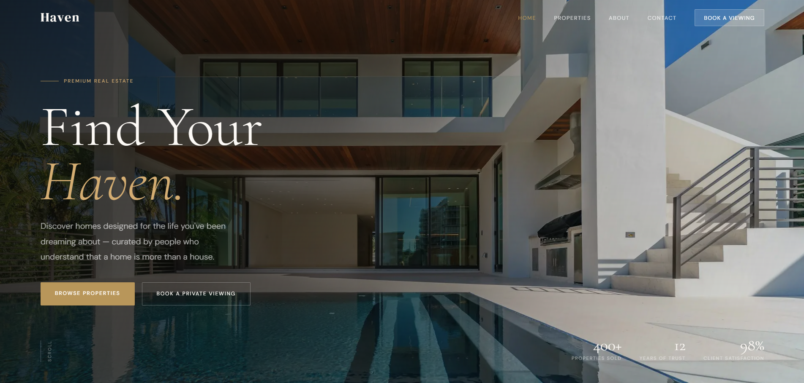
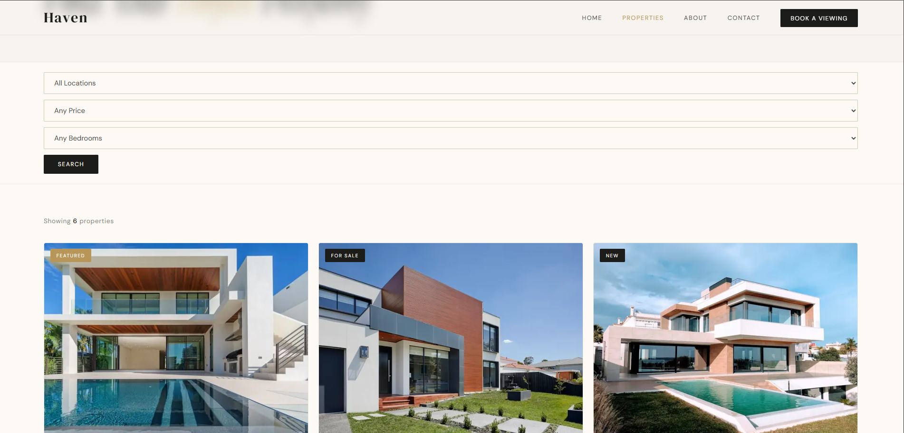
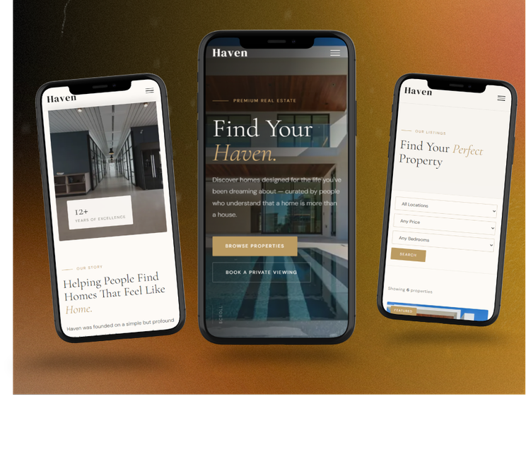

Haven is a premium real estate platform built to showcase beautiful homes and connect people with their perfect living space. The challenge was to make property browsing feel elevated — not transactional — while keeping the user experience smooth and intuitive across all devices.
Industry
Real Estate & Property Development
Project Type
Premium Real Estate Platform — Full Design & Development
Timeline
Design to deployment, iterative build process
Deliverables
Responsive website · Property listings UI · Search & filter · Live deployment via Vercel
Real estate websites often prioritize data over experience — cramming in listings, filters, and prices without any sense of brand or emotion. Haven needed to be different.
The goal was to design a platform that made browsing properties feel like flipping through a luxury magazine — while still surfacing the right listings quickly through smart search and filter UX.
Every visual decision had to earn its place: does this make the property feel more desirable, or does it get in the way?
Key screens from the Haven platform — hero, listings, and property detail.

Hero Section
Property Listings
Mobile ViewStudied premium real estate brands and luxury hospitality websites to understand what made them feel high-end. Identified key patterns: generous whitespace, large photography, restrained typography, and muted warm palettes. Built a visual direction around these principles.
Mapped out how a buyer actually searches for a home — by location, price, type, and features. Designed a filter system that felt natural and unobtrusive, surfacing the right properties without making the interface feel clinical or overwhelming.
Each listing card was designed to lead with the image — letting the home speak first. Subtle hover states, clean typography hierarchy, and consistent spacing made browsing feel smooth and intentional. Built using Next.js with TypeScript for a scalable component structure.
Optimized for mobile-first browsing — most property searches happen on phones. Fine-tuned image sizing, card layouts, and filter interactions across breakpoints. Deployed to Vercel with performance optimization for fast image loading.
Chosen for performance, scalability, and a smooth developer experience.
A fully responsive, premium real estate platform with intuitive property search and a luxury visual identity.
Visit the deployed project or go back to the full portfolio.